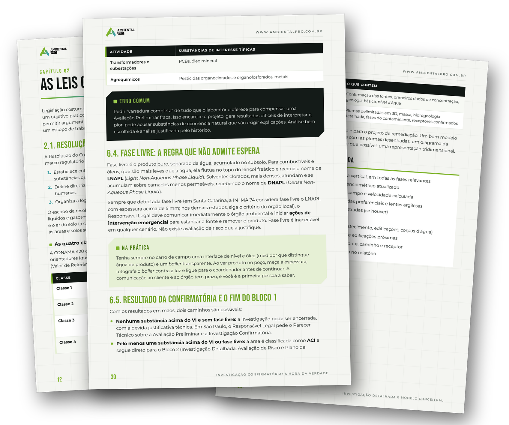
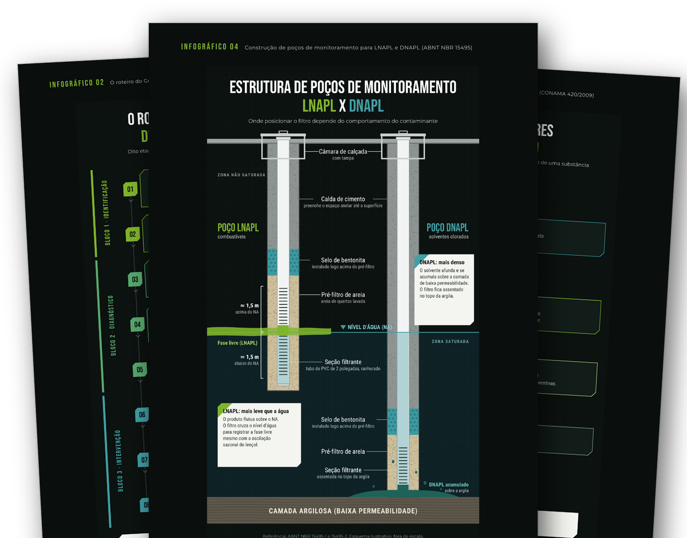
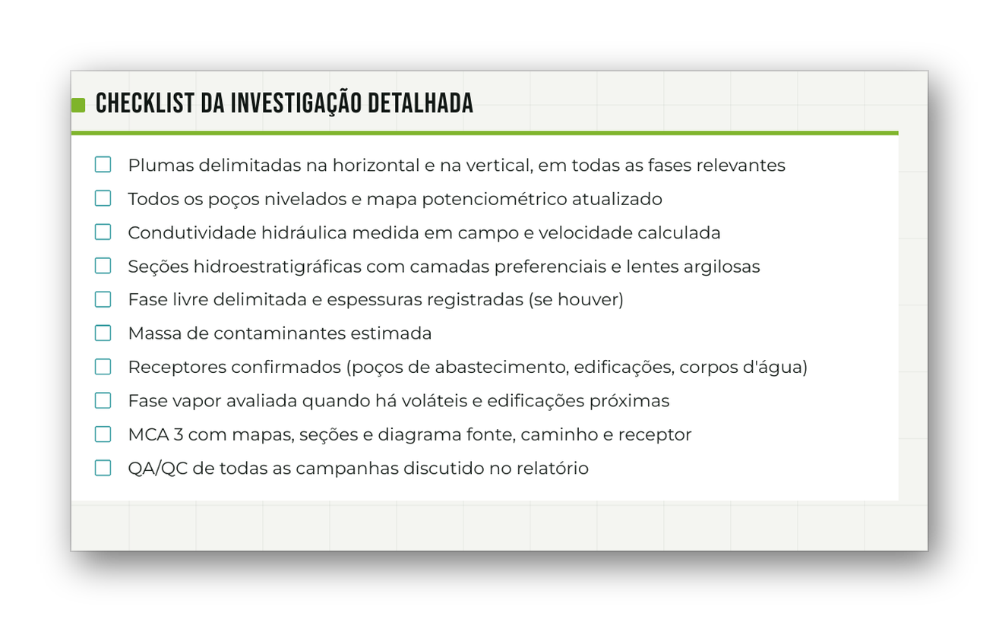

Segurança para começar
Construa uma base para compreender projetos, oportunidades e a composição de propostas.
Entenda o processo da avaliação ao encerramento. Organize sua base técnica com informações, casos comentados e um plano de ação para atuar com áreas contaminadas.
QUERO CONHECER O MANUALEbook em PDF · Ambiental Pro

Relatórios, tabelas e normas podem parecer desconectados. O manual organiza o gerenciamento de áreas contaminadas na sequência de um caso e explica as decisões de cada etapa.
Construa uma base para compreender projetos, oportunidades e a composição de propostas.
Conecte investigação, avaliação de risco e escolha de tecnologias ao objetivo de cada etapa.
Do marco legal ao encerramento, reúna conceitos, exercícios e ferramentas de consulta.
O manual organiza o caminho. Estude o processo completo e volte aos checklists e anexos quando precisar.
96 páginas em PDF com sumário navegável, tabelas, boxes de erro comum e materiais para consulta.
Prévias reais do material. Clique para ampliar em uma nova aba.



CONAMA 420, Lei 13.577/2009, procedimentos CETESB, IN IMA 74 e normas ABNT usadas no gerenciamento.
Avaliação Preliminar, Investigação Confirmatória, campo, QA/QC, Investigação Detalhada e Avaliação de Risco à saúde humana.
Plano de Intervenção e tecnologias como SVE, Air Sparging, MPE, ISCO, biorremediação, dessorção térmica, nZVI, barreiras e atenuação natural.
Operação, monitoramento, Termo de Reabilitação, brownfields e três casos comentados do início ao fim.
Oportunidades, proposta, composição de custos, ART, relatório e plano de ação de 90 dias.
Glossário com mais de 70 siglas, mapa rápido de normas por etapa e checklists reunidos.
Manual Prático de Remediação de Áreas Contaminadas.
De R$ 97
ou 12x de R$ 6,70
Compra em breve. O link de pagamento ainda não está disponível.
O site de referência informa pagamento por cartão, Pix ou boleto, entrega após confirmação e 7 dias de garantia.
Quando as vendas estiverem disponíveis, escolha a forma de pagamento no checkout.
O acesso é enviado após a confirmação do pagamento. No boleto, aguarde a compensação.
Leia no celular ou computador e imprima capítulos e checklists para levar a campo.
Educação e tecnologia para profissionais do setor ambiental. Este manual reúne fundamentos, recursos de consulta e aplicação prática para quem está construindo sua atuação com áreas contaminadas.
Em PDF, com 96 páginas e sumário navegável. Leia no celular, tablet ou computador, ou imprima para consulta em campo.
Não. O conteúdo começa nos conceitos básicos e avança até o encerramento. Exercícios e checklists apoiam a compreensão.
O material usa São Paulo como referência principal e indica diferenças entre estados. Confira as exigências do órgão ambiental competente para aplicar o conteúdo a cada caso.
Não. É um material de estudo e consulta, sem certificado ou carga horária.
A entrega é prevista após a confirmação do pagamento. Cartão e Pix costumam confirmar mais rapidamente; boleto depende da compensação bancária.
A oferta do site de referência informa 7 dias de garantia para solicitar reembolso integral.
96 páginas, 6 infográficos, 8 checklists e 3 exercícios resolvidos para organizar sua base em áreas contaminadas.
QUERO MEU MANUAL